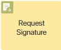
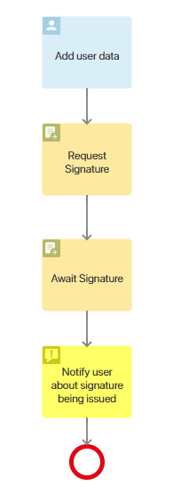
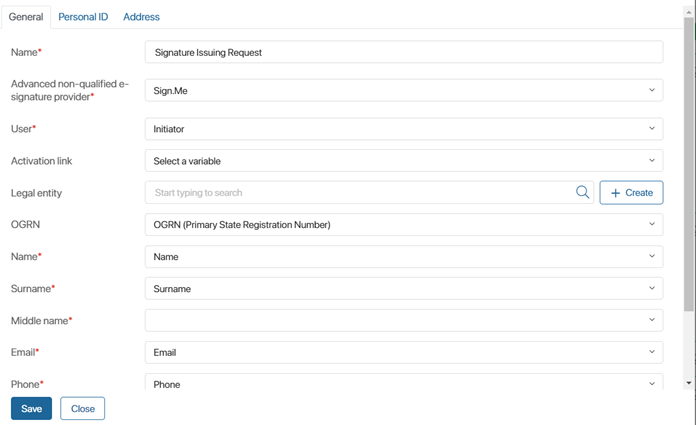
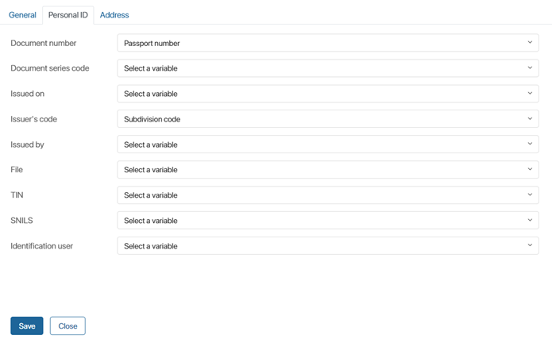
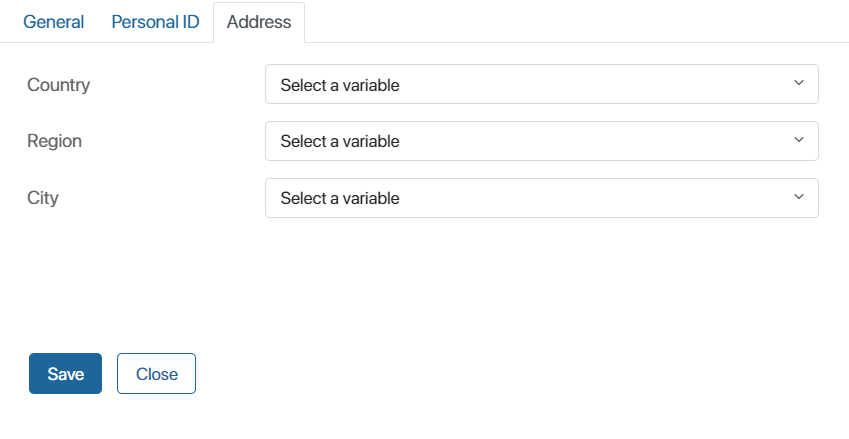

The item allows to provide cloud certificates of advanced non-qualified e-signature and simple e-signature to internal and external users added to BRIX during the process. The activity can be used in the business process designer after configuring an e-signature connection module, e.g., Sign.Me.
The item should be used together with the Await Signature activity and placed on the process diagram before it.
For illustration, consider a process that activates a user account on an external portal and issues an advanced non-qualified e-signature certificate for remote signing of HR documents
During the process, the employee fills out personal information on the portal and then it is transferred to the system. When the process reaches the Request Signature activity, a request for issuing an e-signature certificate is sent to the certification center. Then, for the time of processing the user’s data on the service side, the process stops at the Await Signature activity. After the certificate is issued, the process continues and the employee gets an opportunity to sign HR documents on the portal.
Preliminary process settings
To use the Request Signature activity, it is necessary to pass data about the user requesting the e-signature certificate to it. This is done by mapping the fields in the item settings to the context variables of the process
Before you start customizing the activity, you need to perform the following steps:
- In the business process designer, click Context and create properties that will store the user’s personal information needed to provide the certificate. You can enter custom names and codes for them.
- Place an item on the process diagram that will be used to transfer variable values to the Request Signature activity. This can be a Task or a Script. In the first case, the employee will fill in the user’s data on the task form manually. In the second case, the variable values will be passed when executing the TypeScript code.
The map of the process of issuing an advanced non-qualified e-signature certificate using the Task activity may look as follows:

Set up the activity
On the process page, in the right toolbar, click Integrations. Drag the Request Signature activity onto the diagram and place it where you will need to submit the request for an e-signature certificate.
Double-click on the added activity on the process diagram. Then fill in the settings fields on the three tabs: General, Personal ID, and Address.
General tab

- Name*. Enter the name of the activity that will be displayed on the process diagram.
- Advanced Non-Qualified E-Signature Provider* . Specify the cloud certificate issuance service with which you have set up integration: Sign.Me, Kontur certification center, or a simple e-signature.
- Activation link. The field is mapped to a variable storing a link to the service on the side of which the user completes registration and confirms certificate issuance. For simple e-signature providers, Sign.Me, and Kontur AC, the field can be left empty, because in the first two cases, the certificate issuance confirmation is not required, and in the last case the employee completes the certificate registration in their user account on the unified portal of public services.
- OGRN (Primary State Registration Number). Specify the variable that stores the OGRN of your company issued during registration on the Sign.Me provider’s side. Leave the field empty if you customize the issuance of the advanced non-qualified e-signature with the help of the Kontur certification center;
- User*, Name*, Surname*, Patronymic*, Email*, Phone*, Sex, and Birth Date. Map the fields to context process variables of the corresponding types that store information about the internal or external user requesting the advanced non-qualified e-signature certificate.
Personal ID tab
On this tab, fields are mapped to variables that contain the user’s passport data, scanned passport file, INN, and SNILS.

Address tab
Here you need to select the variables that store data on the user’s passport registration location: country, region, and city.

After filling in all fields, save the settings.
Next, on the process diagram, it is necessary to place the Await Signature activity and configure it.
Please note that if the e-signature is issued via the Kontur certification center, the user needs to complete the registration of the certificate on the unified portal of public services. During the process, it is necessary to notify the user about the need to go to the account and confirm the issuance of the advanced non-qualified e-signature. This can be done using the Notification or Task activity. In this case, the activity should be placed between the Request Signature and Await Signature elements.
Once the process is completed, the internal or external user will be able to sign documents or app items with an individual unqualified e-signature or a simple e-signature.
Found a typo? Select it and press Ctrl+Enter to send us feedback